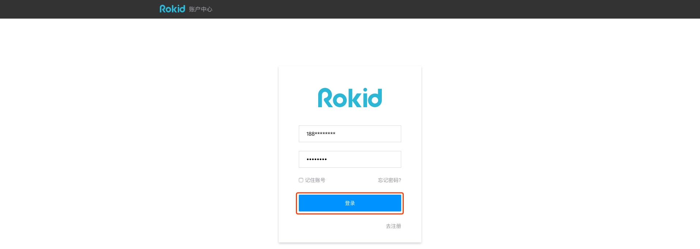
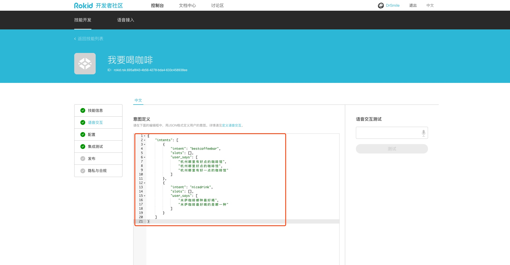
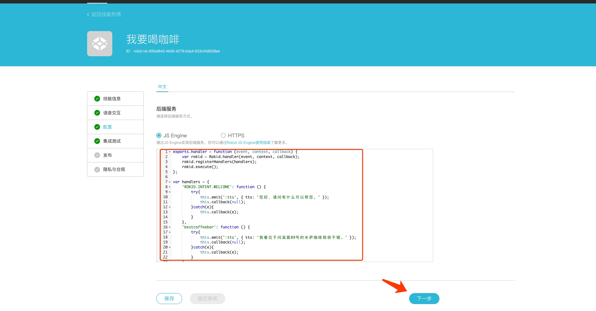
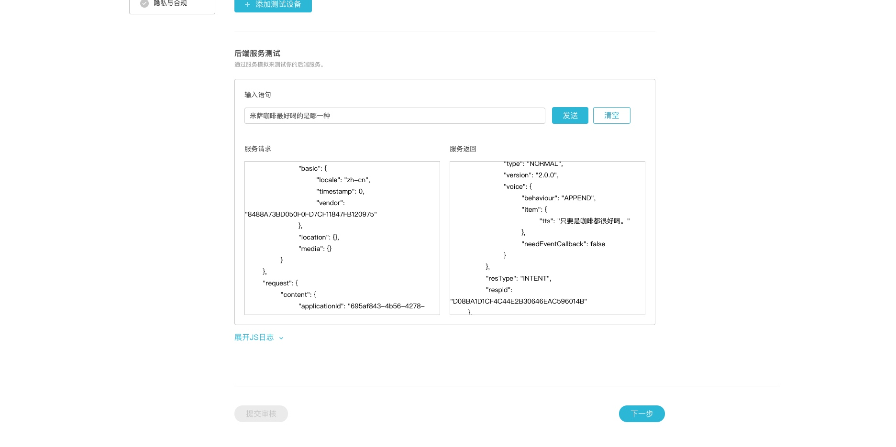
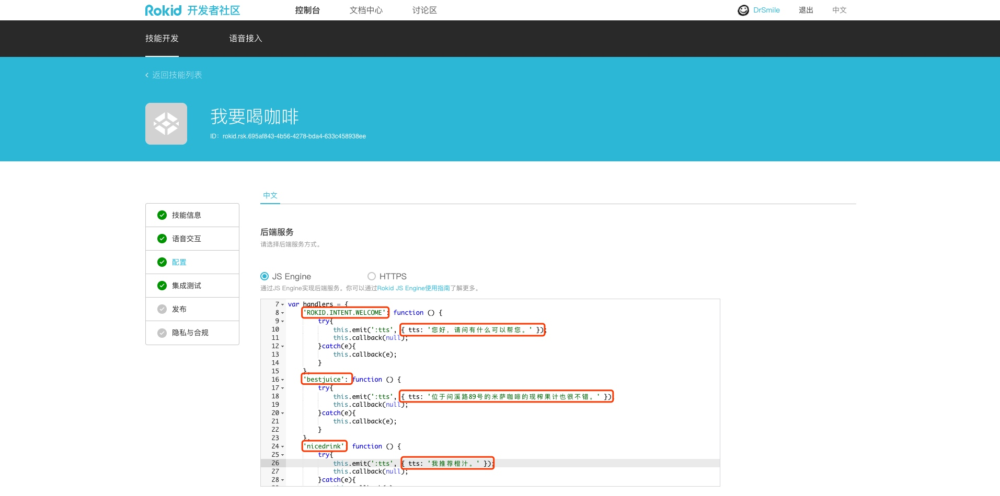
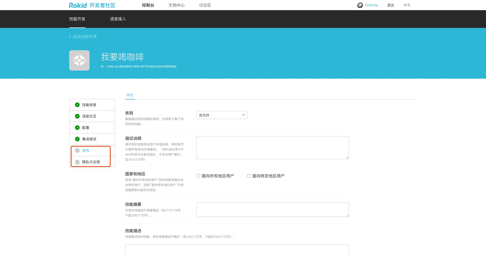

1. 示例技能：我要喝咖啡
1.1. 您将学会
- 如果通过6步快速创建一个Rokid技能。
1.2. 您需要
- Rokid开发者账号
- GitHub中的示例代码
1.3. 1 注册Rokid开发者账号
在Rokid开放平台免费注册一个Rokid开发者账号。
1.4. 2 创建一个技能
登录Rokid开发后台，


登录后，选择「技能开发工具」，并点击「创建新技能」。


给你的技能起个名字
- 技能属性请选择「公开」。
- 技能类型请选择「自定义技能」。
- 为技能起个好名字。
- 为技能起一个朗朗上口的「入口词」，用户将用他来唤起你的技能。

此处的示例
技能名称，入口词均为「我要喝咖啡」。
完成后请点击「下一步」。
1.5. 3 定义技能的语音交互并进行后端配置
首先请查看我们的技能模板：我要喝咖啡。
定义语音交互
接着在「语音交互」页面中，
- 将模板工程 > voice-interaction中的
intent.json文件内容，复制进「意图定义」编辑框。

把intent.json的内容复制进「意图定义」
- 提示：此时可以在该页面右侧的“语音交互测试”中测试配置是否正确。
完成后请点击「下一步」。
完成服务配置
接着在「配置」页面中，
- 选中「JS Engine」，
- 将模板工程 > sample-js中的
js-engine.js文件内容复制到下方的编辑框中。

完成后请点击「下一步」。
1.6. 4 测试你的技能
接下来，在「集成测试」页面中，
- 在「后端服务测试」下，输入「用户语句」，比如“若琪，打开「入口词」。”
- 你将会看到下方框体中出现经过Rokid语音服务解析的Json「服务请求」，和相应的「服务返回」。
- （可选）如果需要在机器上进行测试，请根据公司ID、设备Type ID、设备ID来「添加测试设备」。

此处使用：“打开「我要喝咖啡」”进行测试

此处使用：“杭州哪里有好点的咖啡馆”进行测试

此处使用：“米萨咖啡最好喝的是哪一种”进行测试
1.6.1. 5 自定义这个技能
- 首先，您可以对技能的名称和入口词进行修改，比如起一个新的名字「我要喝橙汁」。

- 接着您可以修改技能的intent名称和相应的用户语句。比如将问句变为「杭州哪里有好点的鲜榨果汁」。

- 修改Js Engine中的相关回复。 
- 通过集成测试页面看看修改后效果吧。
1.6.2. 6 发布
将「发布」及「隐私与合规」所需的内容填写完毕后，点击页面最下方亮起的“提交审核”按钮提交发布申请，等待Rokid审核通过后技能即可发布上线。
需注意：开发者需要通过个人身份认证才可以将技能提交审核。
